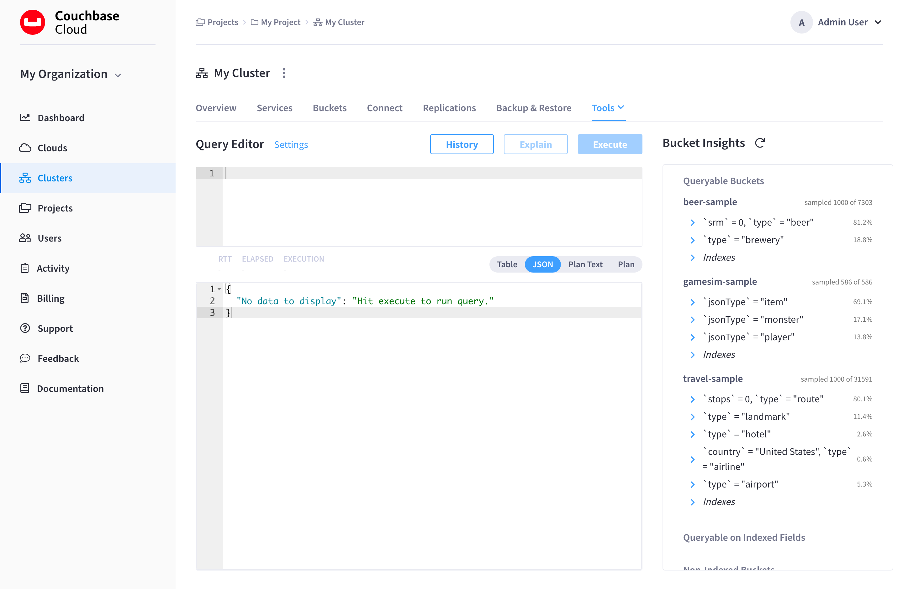

Query Workbench
The Query Workbench provides a rich graphical user interface to perform query development.
Using the Query Workbench, you can conveniently explore data, create, edit, run, and save N1QL queries, view and save query results, and explore the document structures in a bucket - all in a single window.
Features of the Query Workbench include:
-
A single, integrated visual interface to perform query development and testing.
-
Easy viewing and editing of complex queries by providing features such as multi-line formatting, copy-and-paste, syntax coloring, auto completion of N1QL keywords and bucket and field names, and easy cursor movement.
-
View the structure of the documents in a bucket by using the N1QL INFER command. You no longer have to select the documents at random and guess the structure of the document.
-
Display query results in multiple formats: JSON, table, and tree. You can also save the query results to a file on disk.
| The Query Workbench is only available on clusters that are running the Query Service. |
Accessing the Query Workbench
If a cluster is running the Query Service, the Query Workbench can be accessed under the cluster’s Tools > Query Workbench tab.
The cluster’s 'Advanced Query Workbench' tab.">
The Query Workbench consists of three working areas:
|
Permissions Required
In order to access the Query Workbench, the following permissions are required:
|
Using the Query Editor
The Query Editor is where you build and run queries, and view query execution plans. Enter a query into the Query Editor, and then run the query by clicking Execute.
You can also execute queries by typing a semi-colon (;) at the end of the query and hitting Enter.
|
The Query Editor provides the following additional features:
-
Syntax coloring - For easy viewing, N1QL keywords, numbers and string literals are differently colored.
-
Auto-completion - When entering a keyword in the Query Editor, if you press the Tab key or Ctrl+Space, the tool offers a list of matching N1QL keywords and bucket names that are close to what you have typed so far. For names that have a space or a hyphen (-), the auto-complete option includes back quotes around the name. If you expand a bucket in the Data Bucket Analysis, the tool learns and includes the field names from the schema of the expanded bucket.
-
Support for N1QL INFER statements - The tool supports the N1QL INFER statement.
Run a Query
After entering a query, you can execute the query either by typing a semicolon (;) and pressing Enter, or by clicking the Execute button.
When the query is running, the Execute button changes to Cancel, which allows you to cancel the running query.
When you cancel a running query, it stops the activity on the cluster side as well.
| The Cancel button does not cancel index creation statements. The index creation continues on the server side even though it appears to have been canceled from the Query Workbench. |
Viewing the Query Results
When you execute a query, the results are displayed in the Query Results area. Since large result sets can take a long time to display, it’s recommended that you use the LIMIT clause as part of your query when appropriate.
The figures in this section display the result of the following query:
SELECT * FROM `travel-sample` WHERE type="airport" LIMIT 1;When a query finishes, metrics for that query are displayed between the Query Editor and the Query Results areas.
The following query metrics are displayed:
-
Status - Shows the status of the query. The values can be: success, failed, or HTTP codes.
-
Last Run - The time at which the query was last executed.
-
Round-trip time (RTT) - The total time it took to send the request and receive the response from the server.
-
Elapsed - The time taken by the server to process the request.
-
Execution - The time taken by the server to execute the query.
-
Docs - The number of documents returned.
-
Mutation Count - The number of documents deleted or changed by the query. This appears only for UPDATE and DELETE queries instead of Result Count.
-
Size - The total size, in bytes, of the documents returned.
JSON Format
The JSON tab formats the results to make the data easy to read. You can also expand and collapse objects and array values using the small arrow icons next to the line numbers.
| If you clicked Execute, the results of the query are shown. If you clicked Explain, the results are the same as Plan Text format. |

Table Format
The Table tab presents the results in a tabular format.
The tool converts the JSON documents to HTML tables, and presents sub-objects or sub-arrays as sub-tables.
This format works well for queries that return an array of objects, like select `beer-sample`.* from `beer-sample`;.
You can hover the mouse pointer over a data value to see the path to that value in a tool tip.
You can sort a column by clicking the column header.

Plans
Each time a query is executed, an EXPLAIN command is automatically run in the background to retrieve the query plan for that query. You may also generate the query plan by clicking Explain.
Plan
The Plan tab presents the query in a graphical format.
At the top, it shows a summary which also shows lists of the buckets, indexes, and fields used by the query.
At the bottom is a data-flow diagram of query operators, with the initial scans at the right, and the final output on the left.
Potentially expensive operators are highlighted.
The data flow generally follows these steps:
-
Scan
-
Fetch
-
Filter
-
Projection (part 1)
-
Order
-
Projection (part 2)
| Projection is split into two parts (one before Order and one after Order), but Query Workbench shows only the first part. |

Hovering over any unit of the plan shows more details of it. In this example query:
| Unit name | Information shown when hovered over |
|---|---|
Order |
{'#operator':'Order':'sort_terms':
[{'expr':'(`travel-sample`.`name`)'}]}
|
Project |
{'#operator':'InitialProject':'result_terms':
[{'expr':'self','star':true}]}
|
Filter |
{'#operator':'Filter','condition':'(((`travel-sample`.`type`) = \'landmark\') and
((`travel-sample`.`city`) = \'San Francisco\'))'}
|
Fetch |
{'#operator':'Fetch','keyspace':'travel-sample','namespace':'default'}
|
IntersectScan |
(none) |
IndexScan2 (above) |
{'#operator':'IndexScan2','index':'def_city','index_id':'d51323973a9c8458','index_projection':
{'primary_key':true},'keyspace':'travel-sample','namespace':'default','spans':
[{'exact':true,'range':[{'high':'\San Francisco\'','inclusion':3,'low':'\'San Francisco\''}]}],'using':'gsi'}
|
IndexScan2 (below) |
{'#operator':'IndexScan2','index':'def_city','index_id':'a11b1af8651888cf','index_projection':
{'primary_key':true},'keyspace':'travel-sample','namespace':'default','spans':
[{'exact':true,'range':[{'high':'\'landmark'\'','inclusion':3,'low':'\'landmark\''}]}],'using':'gsi'}
|
In general, the preference of scan is
-
Covering Index
-
Index Scan
-
Intersect Scan
-
Union Scan, and finally
-
Fetch
Plan Text
The Plan Text tab shows the EXPLAIN query execution plan in JSON format.
If you clicked Execute, a detailed query execution plan is shown, which includes information about how long each step in the plan took to execute. If you clicked Explain, the intended query execution plan is shown (minus the details that would be included if you actually executed the query).

View Query History
The Query Workbench maintains a history of all the queries executed.
If you edit a previous query and execute it, the new query is stored at the end of the history. The history is persistent across browser sessions. The query history only saves queries; due to limited browser storage it does not save query results. Thus, when you restart the browser or reload the page, you can see your old queries, but you must re-execute the queries if you want to see their results.
| Clearing the browser history clears the history maintained by the Query Editor as well. |
Clicking History opens the Query History fly-out menu:
You can scroll through the entire query history, and click on an individual query to be taken to that particular point in the history.
-
Search history - You can search the query history by entering text in the Filter Queries search box. All matching queries are displayed.
-
Delete a specific entry - Click the Trash icon next to a particular query to delete it from the history.
This can be useful if you want a more manicured history when you export the history for future use. -
Delete all entries - Click Clear to delete the entire query history.
Import Queries
You can load a new query history into the Query Workbench from a JSON file. This can be the exported query history from a different cluster.
| Importing query history will overwrite your current query history. |
-
From the cluster’s Tools > Query Workbench tab, click History.
This opens the Query History fly-out menu.
-
Click Import.
This opens the Import Query History fly-out menu.
-
Click Import JSON and select a local
.jsonfile that you wish to import. -
Click Save.
The preexisting query history is overwritten with the query history of the imported file.
Export Query History
You can export the current query history to a JSON file. This file can be imported onto other clusters.
-
From the cluster’s Tools > Query Workbench tab, click History.
This opens the Query History fly-out menu.
-
Click Export.
This opens the Export Query History fly-out menu.
-
(Optional) Use the File Name field to specify a name for the exported file.
-
Click Export.
The fly-out menu closes and the file is downloaded onto your computer.
Modify Query Settings
You can specify various settings for the Query Workbench and the Query Service by clicking Settings. This opens the Query Settings fly-out menu.
Workbench Settings
Configure the following settings and click Submit to save the configuration.
| Option | Description |
|---|---|
Timeout |
The timeout parameter can be used to limit the running time of a query. |
Scan Consistency |
This is a cbq-engine option. Select one of the following options:
For more information, refer to Settings and Parameters in the Couchbase Server documentation. |
Named Parameters |
For the prepared queries, this option allows you to specify any number of named parameters. Click the + button to add new named parameters, and the - button to remove the parameters. Named parameters must start with the dollar sign ($) for use in prepared queries. Otherwise, they are interpreted as parameters to the Query REST API. |
Positional Parameters |
For the prepared queries, this option allows you to specify values for $1, $2, and so on up to as many positional parameters as you have. Click the + button to add new positional parameters, and the - button to remove the parameters. The parameters are automatically labelled as "$1", "$2", and so on. |
Query Service Settings
Configure the following settings and click Submit to save the configuration.
-
Quota: The maximum size for the Query Service temp directory, in megabytes. The Query Service temp directory is where temporary files are written, based on query activities.
-
Pipeline Batch: The number of items that can be batched for fetches from the Data Service.
-
Pipeline Cap: The maximum number of items that can be buffered in a fetch.
-
Scan Cap: The maximum buffered channel size between the indexer client and the Query Service, for index scans.
-
Timeout: The maximum time to spend on a request before timing out.
-
Prepared Limit: The maximum number of prepared statements to be held in the cache.
-
Completed Limit: The number of requests to be logged in the completed requests catalog.
-
Completed Threshold: The completed-query duration (in millisconds) beyond which the query is logged in the completed requests catalog.
-
Log Level: The log level used in the logger.
-
Max Parallelism: The maximum number of index partitions for parallel aggregation-computing.
-
N1QL Feature Controller: Provided for technical support only.
Click Submit to save any modifications to the settings.
For more information about these settings, refer to the N1QL Admin REST API.
Data Insights
The Bucket Insights area displays all installed buckets in the cluster. By default, when the Query Workbench is first loaded, it retrieves a list of available buckets from the cluster. The Bucket Insights area is automatically refreshed when buckets or indexes are added or removed, but you can manually refresh it using the refresh button.
The buckets are grouped into the following categories based on the indexes created for the bucket:
-
Queryable Buckets: Contain a primary index or a primary index and secondary indexes.
-
Queryable on Indexed Fields: Do not contain a primary index, but have one or more secondary indexes.
-
Non-Indexed Buckets: Do not contain any indexes. These buckets do not support queries. You must first define an index before querying these buckets.
You can expand any bucket to view the schema for that bucket: field names, types, and if you hover the mouse pointer over a field name, you can see example values for that field. Bucket analysis is based on the N1QL INFER statement, which you can run manually to get more detailed results. This command infers a schema for a bucket by examining a random sample of documents. Because the command is based on a random sample, the results may vary slightly from run to run. The default sample size is 1000 documents. The syntax of the command is:
INFER bucket-name [ WITH options ];where options is a JSON object, specifying values for one or more of sample_size, similarity_metric, num_sample_values, or dictionary_threshold.
For example, to increase the sample size to 3000, you could use the following query:
INFER `travel-sample` WITH {"sample_size":3000};